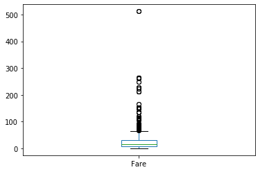

Contents
DATA SCIENTIST REPORT 2017 - Adquisición y limpieza de datos consume la mayor parte del tiempo en un proyecto

#1 Analisis Exploratorio de Datos (EDA)
#Estructura básica (nro filas, nro de columnas, tipo de dato de las columnas, explorar el head y tail)
# filas/columnas = observaciones/variables
#Comprender los datos con estadísticas básicas (categorico/nominal, ordinal, contínuo),
#calidad de datos: datos faltantes, valores atípicos
#2 Preparación de datos (Data Wrangling/Data Munging)
#Reemplazar, eliminar datos faltantes, valores atípicos, realizar sumarizaciones, re-shaping
#Herramentas
#Numpy: módulos para manipulación de arreglos y matrices
#Pandas: manipulación de tablas (DataFrames)
Numpy Python Data Analysis Library (Pandas) Abrir un archivo With - Gestores de contexto
import requests
csv_url = "https://www.datos.gov.co/api/views/6zi7-wwa7/rows.csv?accessType=DOWNLOAD"
#respuesta = requests.get(csv_url)
#with open("archivo.csv", "wb") as archivo:
#archivo.write(respuesta.content)
import pandas as pd
import numpy as np
import os
ruta_archivo = os.path.join("titanic", "train.csv")
print(ruta_archivo)
df = pd.read_csv(ruta_archivo, index_col='PassengerId')
titanic\train.csv
type(df)
pandas.core.frame.DataFrame
#info() muestra un resumen del DataFrame
#Pclass
#SibSp numero hermanos , espos@
#Parch numero padres , hij@s)
#Embarked punto de embarque C=Cherburgo Q=Queenstown S= Southampton
df.info()
<class 'pandas.core.frame.DataFrame'>
Int64Index: 891 entries, 1 to 891
Data columns (total 11 columns):
# Column Non-Null Count Dtype
--- ------ -------------- -----
0 Survived 891 non-null int64
1 Pclass 891 non-null int64
2 Name 891 non-null object
3 Sex 891 non-null object
4 Age 714 non-null float64
5 SibSp 891 non-null int64
6 Parch 891 non-null int64
7 Ticket 891 non-null object
8 Fare 891 non-null float64
9 Cabin 204 non-null object
10 Embarked 889 non-null object
dtypes: float64(2), int64(4), object(5)
memory usage: 83.5+ KB
df.head(10)
| Survived | Pclass | Name | Sex | Age | SibSp | Parch | Ticket | Fare | Cabin | Embarked | |
|---|---|---|---|---|---|---|---|---|---|---|---|
| PassengerId | |||||||||||
| 1 | 0 | 3 | Braund, Mr. Owen Harris | male | 22.0 | 1 | 0 | A/5 21171 | 7.2500 | NaN | S |
| 2 | 1 | 1 | Cumings, Mrs. John Bradley (Florence Briggs Th... | female | 38.0 | 1 | 0 | PC 17599 | 71.2833 | C85 | C |
| 3 | 1 | 3 | Heikkinen, Miss. Laina | female | 26.0 | 0 | 0 | STON/O2. 3101282 | 7.9250 | NaN | S |
| 4 | 1 | 1 | Futrelle, Mrs. Jacques Heath (Lily May Peel) | female | 35.0 | 1 | 0 | 113803 | 53.1000 | C123 | S |
| 5 | 0 | 3 | Allen, Mr. William Henry | male | 35.0 | 0 | 0 | 373450 | 8.0500 | NaN | S |
| 6 | 0 | 3 | Moran, Mr. James | male | NaN | 0 | 0 | 330877 | 8.4583 | NaN | Q |
| 7 | 0 | 1 | McCarthy, Mr. Timothy J | male | 54.0 | 0 | 0 | 17463 | 51.8625 | E46 | S |
| 8 | 0 | 3 | Palsson, Master. Gosta Leonard | male | 2.0 | 3 | 1 | 349909 | 21.0750 | NaN | S |
| 9 | 1 | 3 | Johnson, Mrs. Oscar W (Elisabeth Vilhelmina Berg) | female | 27.0 | 0 | 2 | 347742 | 11.1333 | NaN | S |
| 10 | 1 | 2 | Nasser, Mrs. Nicholas (Adele Achem) | female | 14.0 | 1 | 0 | 237736 | 30.0708 | NaN | C |
df.tail(10)
| Survived | Pclass | Name | Sex | Age | SibSp | Parch | Ticket | Fare | Cabin | Embarked | |
|---|---|---|---|---|---|---|---|---|---|---|---|
| PassengerId | |||||||||||
| 882 | 0 | 3 | Markun, Mr. Johann | male | 33.0 | 0 | 0 | 349257 | 7.8958 | NaN | S |
| 883 | 0 | 3 | Dahlberg, Miss. Gerda Ulrika | female | 22.0 | 0 | 0 | 7552 | 10.5167 | NaN | S |
| 884 | 0 | 2 | Banfield, Mr. Frederick James | male | 28.0 | 0 | 0 | C.A./SOTON 34068 | 10.5000 | NaN | S |
| 885 | 0 | 3 | Sutehall, Mr. Henry Jr | male | 25.0 | 0 | 0 | SOTON/OQ 392076 | 7.0500 | NaN | S |
| 886 | 0 | 3 | Rice, Mrs. William (Margaret Norton) | female | 39.0 | 0 | 5 | 382652 | 29.1250 | NaN | Q |
| 887 | 0 | 2 | Montvila, Rev. Juozas | male | 27.0 | 0 | 0 | 211536 | 13.0000 | NaN | S |
| 888 | 1 | 1 | Graham, Miss. Margaret Edith | female | 19.0 | 0 | 0 | 112053 | 30.0000 | B42 | S |
| 889 | 0 | 3 | Johnston, Miss. Catherine Helen "Carrie" | female | NaN | 1 | 2 | W./C. 6607 | 23.4500 | NaN | S |
| 890 | 1 | 1 | Behr, Mr. Karl Howell | male | 26.0 | 0 | 0 | 111369 | 30.0000 | C148 | C |
| 891 | 0 | 3 | Dooley, Mr. Patrick | male | 32.0 | 0 | 0 | 370376 | 7.7500 | NaN | Q |
#Concetenar DFs
#df = pd.concat((df_01, df_02),axis=0)
#Agregar columnas/variables
df["NuevaVariable"] = "Test"
df.head(5)
| Survived | Pclass | Name | Sex | Age | SibSp | Parch | Ticket | Fare | Cabin | Embarked | NuevaVariable | |
|---|---|---|---|---|---|---|---|---|---|---|---|---|
| PassengerId | ||||||||||||
| 1 | 0 | 3 | Braund, Mr. Owen Harris | male | 22.0 | 1 | 0 | A/5 21171 | 7.2500 | NaN | S | Test |
| 2 | 1 | 1 | Cumings, Mrs. John Bradley (Florence Briggs Th... | female | 38.0 | 1 | 0 | PC 17599 | 71.2833 | C85 | C | Test |
| 3 | 1 | 3 | Heikkinen, Miss. Laina | female | 26.0 | 0 | 0 | STON/O2. 3101282 | 7.9250 | NaN | S | Test |
| 4 | 1 | 1 | Futrelle, Mrs. Jacques Heath (Lily May Peel) | female | 35.0 | 1 | 0 | 113803 | 53.1000 | C123 | S | Test |
| 5 | 0 | 3 | Allen, Mr. William Henry | male | 35.0 | 0 | 0 | 373450 | 8.0500 | NaN | S | Test |
#del df["NuevaVariable"]
df.head(5)
| Survived | Pclass | Name | Sex | Age | SibSp | Parch | Ticket | Fare | Cabin | Embarked | NuevaVariable | |
|---|---|---|---|---|---|---|---|---|---|---|---|---|
| PassengerId | ||||||||||||
| 1 | 0 | 3 | Braund, Mr. Owen Harris | male | 22.0 | 1 | 0 | A/5 21171 | 7.2500 | NaN | S | Test |
| 2 | 1 | 1 | Cumings, Mrs. John Bradley (Florence Briggs Th... | female | 38.0 | 1 | 0 | PC 17599 | 71.2833 | C85 | C | Test |
| 3 | 1 | 3 | Heikkinen, Miss. Laina | female | 26.0 | 0 | 0 | STON/O2. 3101282 | 7.9250 | NaN | S | Test |
| 4 | 1 | 1 | Futrelle, Mrs. Jacques Heath (Lily May Peel) | female | 35.0 | 1 | 0 | 113803 | 53.1000 | C123 | S | Test |
| 5 | 0 | 3 | Allen, Mr. William Henry | male | 35.0 | 0 | 0 | 373450 | 8.0500 | NaN | S | Test |
#Igual que df.Name
df["Name"]
PassengerId
1 Braund, Mr. Owen Harris
2 Cumings, Mrs. John Bradley (Florence Briggs Th...
3 Heikkinen, Miss. Laina
4 Futrelle, Mrs. Jacques Heath (Lily May Peel)
5 Allen, Mr. William Henry
...
887 Montvila, Rev. Juozas
888 Graham, Miss. Margaret Edith
889 Johnston, Miss. Catherine Helen "Carrie"
890 Behr, Mr. Karl Howell
891 Dooley, Mr. Patrick
Name: Name, Length: 891, dtype: object
type(df.Fare)
pandas.core.series.Series
df[['Name','Age']].head(5)
| Name | Age | |
|---|---|---|
| PassengerId | ||
| 1 | Braund, Mr. Owen Harris | 22.0 |
| 2 | Cumings, Mrs. John Bradley (Florence Briggs Th... | 38.0 |
| 3 | Heikkinen, Miss. Laina | 26.0 |
| 4 | Futrelle, Mrs. Jacques Heath (Lily May Peel) | 35.0 |
| 5 | Allen, Mr. William Henry | 35.0 |
#Seleccionar por filas y columnas
df.loc[7:10, ['Name','Age']]
| Name | Age | |
|---|---|---|
| PassengerId | ||
| 7 | McCarthy, Mr. Timothy J | 54.0 |
| 8 | Palsson, Master. Gosta Leonard | 2.0 |
| 9 | Johnson, Mrs. Oscar W (Elisabeth Vilhelmina Berg) | 27.0 |
| 10 | Nasser, Mrs. Nicholas (Adele Achem) | 14.0 |
df.loc[0:5, "Name":"Age"]
| Name | Sex | Age | |
|---|---|---|---|
| PassengerId | |||
| 1 | Braund, Mr. Owen Harris | male | 22.0 |
| 2 | Cumings, Mrs. John Bradley (Florence Briggs Th... | female | 38.0 |
| 3 | Heikkinen, Miss. Laina | female | 26.0 |
| 4 | Futrelle, Mrs. Jacques Heath (Lily May Peel) | female | 35.0 |
| 5 | Allen, Mr. William Henry | male | 35.0 |
df.iloc[0:5, 2:5]
| Name | Sex | Age | |
|---|---|---|---|
| PassengerId | |||
| 1 | Braund, Mr. Owen Harris | male | 22.0 |
| 2 | Cumings, Mrs. John Bradley (Florence Briggs Th... | female | 38.0 |
| 3 | Heikkinen, Miss. Laina | female | 26.0 |
| 4 | Futrelle, Mrs. Jacques Heath (Lily May Peel) | female | 35.0 |
| 5 | Allen, Mr. William Henry | male | 35.0 |
#Filtrado
varones = df.loc[df.Sex == 'male',:]
print(type(varones))
varones.head(5)
<class 'pandas.core.frame.DataFrame'>
| Survived | Pclass | Name | Sex | Age | SibSp | Parch | Ticket | Fare | Cabin | Embarked | NuevaVariable | |
|---|---|---|---|---|---|---|---|---|---|---|---|---|
| PassengerId | ||||||||||||
| 1 | 0 | 3 | Braund, Mr. Owen Harris | male | 22.0 | 1 | 0 | A/5 21171 | 7.2500 | NaN | S | Test |
| 5 | 0 | 3 | Allen, Mr. William Henry | male | 35.0 | 0 | 0 | 373450 | 8.0500 | NaN | S | Test |
| 6 | 0 | 3 | Moran, Mr. James | male | NaN | 0 | 0 | 330877 | 8.4583 | NaN | Q | Test |
| 7 | 0 | 1 | McCarthy, Mr. Timothy J | male | 54.0 | 0 | 0 | 17463 | 51.8625 | E46 | S | Test |
| 8 | 0 | 3 | Palsson, Master. Gosta Leonard | male | 2.0 | 3 | 1 | 349909 | 21.0750 | NaN | S | Test |
varones_en_primera_clase = df.loc[((df.Sex == 'male') & (df.Pclass == 1)),:]
varones_en_primera_clase.head(5)
| Survived | Pclass | Name | Sex | Age | SibSp | Parch | Ticket | Fare | Cabin | Embarked | NuevaVariable | |
|---|---|---|---|---|---|---|---|---|---|---|---|---|
| PassengerId | ||||||||||||
| 7 | 0 | 1 | McCarthy, Mr. Timothy J | male | 54.0 | 0 | 0 | 17463 | 51.8625 | E46 | S | Test |
| 24 | 1 | 1 | Sloper, Mr. William Thompson | male | 28.0 | 0 | 0 | 113788 | 35.5000 | A6 | S | Test |
| 28 | 0 | 1 | Fortune, Mr. Charles Alexander | male | 19.0 | 3 | 2 | 19950 | 263.0000 | C23 C25 C27 | S | Test |
| 31 | 0 | 1 | Uruchurtu, Don. Manuel E | male | 40.0 | 0 | 0 | PC 17601 | 27.7208 | NaN | C | Test |
| 35 | 0 | 1 | Meyer, Mr. Edgar Joseph | male | 28.0 | 1 | 0 | PC 17604 | 82.1708 | NaN | C | Test |
#Estadisticas
#Numerico: centralidad (media,mediana) y dispersion (rango, percentiles y desviacion estandar)
#Categorico: conteo, valores unicos, proporciones
#Numerico:
#centralidad
# Media/Promedio, sensible a valores atípicos
# Mediana
#dispersion (que tan lejos están de la tendencia central da una idea de la variabilidad de los dato)
# rango: max - min, sensible a valores atípicos
# percentiles: percentile X es Y, el X% de los valores son menores a Y
# valores usuales para X 25, 50, 75 Quartiles
# desviacion estandar: distancia de los valores con la media, sensible a valores atípicos
df.describe()
| Survived | Pclass | Age | SibSp | Parch | Fare | |
|---|---|---|---|---|---|---|
| count | 891.000000 | 891.000000 | 714.000000 | 891.000000 | 891.000000 | 891.000000 |
| mean | 0.383838 | 2.308642 | 29.699118 | 0.523008 | 0.381594 | 32.204208 |
| std | 0.486592 | 0.836071 | 14.526497 | 1.102743 | 0.806057 | 49.693429 |
| min | 0.000000 | 1.000000 | 0.420000 | 0.000000 | 0.000000 | 0.000000 |
| 25% | 0.000000 | 2.000000 | 20.125000 | 0.000000 | 0.000000 | 7.910400 |
| 50% | 0.000000 | 3.000000 | 28.000000 | 0.000000 | 0.000000 | 14.454200 |
| 75% | 1.000000 | 3.000000 | 38.000000 | 1.000000 | 0.000000 | 31.000000 |
| max | 1.000000 | 3.000000 | 80.000000 | 8.000000 | 6.000000 | 512.329200 |
print('Promedio del precio : {0}'.format(df.Fare.mean()))
print('Mediana del precio : {0}'.format(df.Fare.median()))
Promedio del precio : 32.204207968574636
Mediana del precio : 14.4542
#Nan porque hay valores faltantes
print('Min precio : {0}'.format(df.Fare.min()))
print('Max precio : {0}'.format(df.Fare.max()))
print('Rango precio : {0}'.format(df.Fare.max() - df.Fare.min()))
print('25 percentil : {0}'.format(df.Fare.quantile(.25)))
print('50 percentil : {0}'.format(df.Fare.quantile(.5)))
print('75 percentil : {0}'.format(df.Fare.quantile(.75)))
print('Desviacion estandar precio : {0}'.format(df.Fare.std()))
Min precio : 0.0
Max precio : 512.3292
Rango precio : 512.3292
25 percentil : 7.9104
50 percentil : 14.4542
75 percentil : 31.0
Desviacion estandar precio : 49.6934285971809
%matplotlib inline
---------------------------------------------------------------------------
ModuleNotFoundError Traceback (most recent call last)
Input In [22], in <module>
----> 1 get_ipython().run_line_magic('matplotlib', 'inline')
File c:\users\daniel.oropeza\appdata\local\programs\python\python39\lib\site-packages\IPython\core\interactiveshell.py:2204, in InteractiveShell.run_line_magic(self, magic_name, line, _stack_depth)
2202 kwargs['local_ns'] = self.get_local_scope(stack_depth)
2203 with self.builtin_trap:
-> 2204 result = fn(*args, **kwargs)
2205 return result
File c:\users\daniel.oropeza\appdata\local\programs\python\python39\lib\site-packages\IPython\core\magics\pylab.py:99, in PylabMagics.matplotlib(self, line)
97 print("Available matplotlib backends: %s" % backends_list)
98 else:
---> 99 gui, backend = self.shell.enable_matplotlib(args.gui.lower() if isinstance(args.gui, str) else args.gui)
100 self._show_matplotlib_backend(args.gui, backend)
File c:\users\daniel.oropeza\appdata\local\programs\python\python39\lib\site-packages\IPython\core\interactiveshell.py:3327, in InteractiveShell.enable_matplotlib(self, gui)
3306 """Enable interactive matplotlib and inline figure support.
3307
3308 This takes the following steps:
(...)
3324 display figures inline.
3325 """
3326 from IPython.core import pylabtools as pt
-> 3327 from matplotlib_inline.backend_inline import configure_inline_support
3328 gui, backend = pt.find_gui_and_backend(gui, self.pylab_gui_select)
3330 if gui != 'inline':
3331 # If we have our first gui selection, store it
File c:\users\daniel.oropeza\appdata\local\programs\python\python39\lib\site-packages\matplotlib_inline\backend_inline.py:6, in <module>
1 """A matplotlib backend for publishing figures via display_data"""
3 # Copyright (c) IPython Development Team.
4 # Distributed under the terms of the BSD 3-Clause License.
----> 6 import matplotlib
7 from matplotlib.backends.backend_agg import ( # noqa
8 new_figure_manager,
9 FigureCanvasAgg,
10 new_figure_manager_given_figure,
11 )
12 from matplotlib import colors
ModuleNotFoundError: No module named 'matplotlib'
#gráfico box-whisker
df.Fare.plot(kind='box')
<matplotlib.axes._subplots.AxesSubplot at 0xaeef898>
#Categorico:
#centralidad
# Media/Promedio, sensible a valores atípicos
# Mediana
df.describe(include='all')
| Survived | Pclass | Name | Sex | Age | SibSp | Parch | Ticket | Fare | Cabin | Embarked | |
|---|---|---|---|---|---|---|---|---|---|---|---|
| count | 891.000000 | 891.000000 | 891 | 891 | 714.000000 | 891.000000 | 891.000000 | 891 | 891.000000 | 204 | 889 |
| unique | NaN | NaN | 891 | 2 | NaN | NaN | NaN | 681 | NaN | 147 | 3 |
| top | NaN | NaN | Baclini, Miss. Helene Barbara | male | NaN | NaN | NaN | CA. 2343 | NaN | B96 B98 | S |
| freq | NaN | NaN | 1 | 577 | NaN | NaN | NaN | 7 | NaN | 4 | 644 |
| mean | 0.383838 | 2.308642 | NaN | NaN | 29.699118 | 0.523008 | 0.381594 | NaN | 32.204208 | NaN | NaN |
| std | 0.486592 | 0.836071 | NaN | NaN | 14.526497 | 1.102743 | 0.806057 | NaN | 49.693429 | NaN | NaN |
| min | 0.000000 | 1.000000 | NaN | NaN | 0.420000 | 0.000000 | 0.000000 | NaN | 0.000000 | NaN | NaN |
| 25% | 0.000000 | 2.000000 | NaN | NaN | 20.125000 | 0.000000 | 0.000000 | NaN | 7.910400 | NaN | NaN |
| 50% | 0.000000 | 3.000000 | NaN | NaN | 28.000000 | 0.000000 | 0.000000 | NaN | 14.454200 | NaN | NaN |
| 75% | 1.000000 | 3.000000 | NaN | NaN | 38.000000 | 1.000000 | 0.000000 | NaN | 31.000000 | NaN | NaN |
| max | 1.000000 | 3.000000 | NaN | NaN | 80.000000 | 8.000000 | 6.000000 | NaN | 512.329200 | NaN | NaN |
df.Sex.value_counts()
male 577
female 314
Name: Sex, dtype: int64
df.Sex.value_counts(normalize=True)
male 0.647587
female 0.352413
Name: Sex, dtype: float64
#Cuántos sobrevivieron? (Ejercicio)
df.Pclass.value_counts()
3 491
1 216
2 184
Name: Pclass, dtype: int64
df.Pclass.value_counts().plot(kind='bar')
<matplotlib.axes._subplots.AxesSubplot at 0xbf5d860>
df.Pclass.value_counts().plot(kind='bar',rot = 0, title='Conteo de pasajes por clase', color='c');